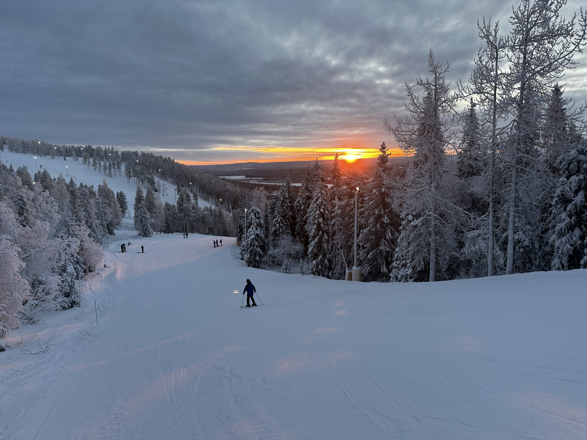
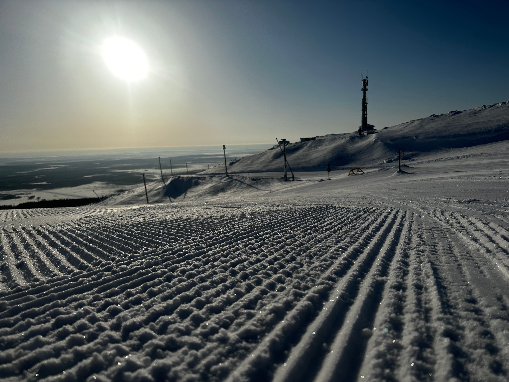
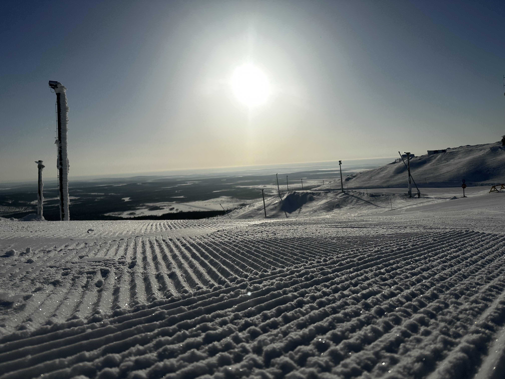
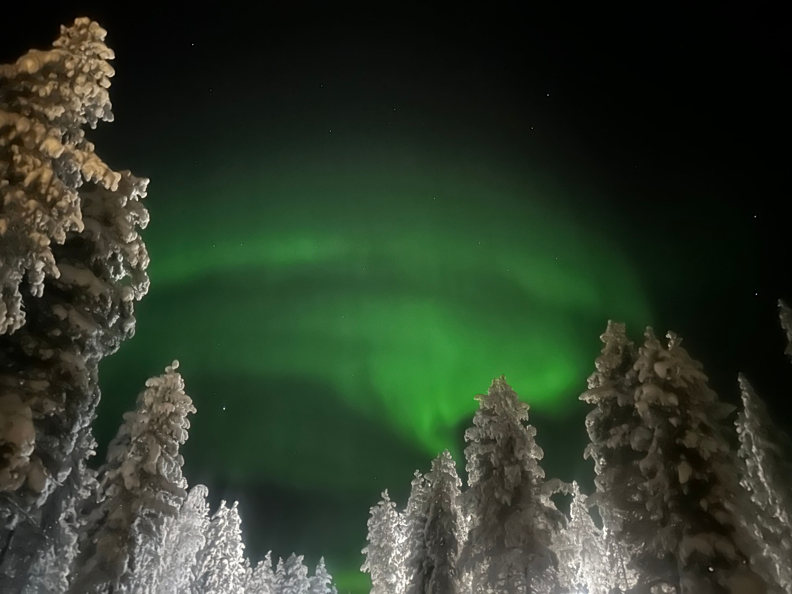

Ylläs is Levi's quieter neighbour and the most underrated destination in Finnish Lapland. Same Kittilä Airport, same direct European flights, less commercial, more local.
Last updated March 2026 — flights verified for winter 2025–26 season
Ylläs sits in the same region as Levi — both served by Kittilä Airport (KTT), both accessible on the same direct European flights. The difference is atmosphere. Where Levi has developed into a well-known resort with all the infrastructure that comes with it, Ylläs has stayed quieter, more local, less packaged.
Finland's highest fell at 718m. 63 ski runs — more than Levi. Over 330km of cross-country trails, widely regarded as the best in Finnish Lapland. A fraction of Levi's visitor numbers.
"Ylläs is the answer if you want what Levi offers — same flights, same region, same winter — but without the resort feeling. The cross-country skiing here is exceptional and the crowds simply aren't there."
Who Ylläs is NOT right for: Travellers who want a buzzing resort atmosphere with bars, restaurants and après-ski. Families who need the most convenient logistics — the transfer from KTT is 45–60 minutes rather than Levi's 15. And if you're flying from one of the airports without direct KTT routes, Ylläs adds extra complexity.

Ylläs uses Kittilä Airport (KTT) — the same airport that serves Levi. All direct European routes into KTT work for Ylläs. The difference is the transfer: Levi is 15 minutes from the airport; Ylläs is 45–60 minutes south. A hire car is strongly recommended.
| From | Airline | Season |
|---|---|---|
| London Gatwick / Manchester | easyJet / TUI | Dec–Feb |
| Amsterdam | KLM / TUI Fly | Nov–Mar |
| Paris CDG / Orly | Air France / Transavia | Dec–Mar |
| Frankfurt | Discover Airlines | Year-round |
| Munich | Lufthansa | Nov–Mar |
| Düsseldorf / Berlin | Eurowings | Nov–Mar |
| Zurich | Edelweiss / Helvetic | Dec–Mar |
| Vienna | Austrian Airlines | Dec–Mar |
If your city doesn't have a direct KTT route, fly Helsinki then Kittilä on Finnair. Same connection works for both Levi and Ylläs — just different ground transport at the other end.
330km of trails across open fell and through old-growth forest. This is the best cross-country terrain in the region — dramatic, varied, and without the crowds. 28km are illuminated for night skiing. The trails link Ylläs to Äkäslompolo village through pristine wilderness.

63 slopes on Finland's highest fell at 718m. More runs than Levi, with good variety for all levels. The ski school is well-regarded. Quieter pistes mean shorter lift queues — a significant practical advantage over Levi in peak season.

Ylläs sits at a similar latitude to Levi with less light pollution. The open fell terrain gives an unobstructed northern horizon — ideal for aurora viewing. A guided snowmobile hunt away from any village lights is the best approach.
Ylläs is quieter by design. The village is smaller, the après-ski is calmer, the bustle is absent. Some people find this a relief. If you want a lively resort with restaurants, bars and a social atmosphere, Levi is the better answer.
The transfer from Kittilä Airport to Ylläs is 45–60 minutes — three to four times longer than Levi's 15-minute bus ride. With young children or heavy ski equipment this is a meaningful difference. Plan for it.
Tell us where you're flying from, who you're with and what matters most. We'll tell you whether Ylläs is the right answer — or whether Levi, Rovaniemi or somewhere else suits you better.
Use the where-to-go tool → All destinations